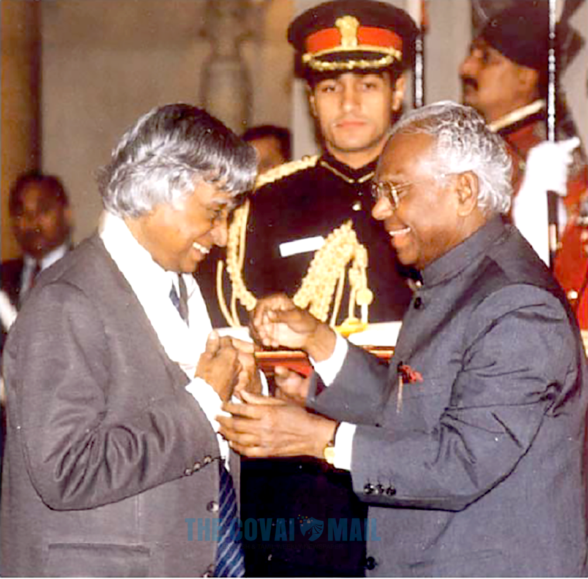
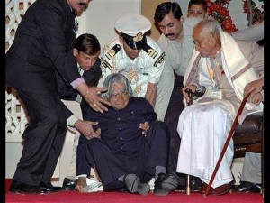

When I was alive

Kalam received 7 honorary doctorates from 40 universities.
The Government of India honoured him with the Padma Bhushan in 1981 and
the Padma Vibhushan in 1990 for his work with ISRO and DRDO and his role
as a scientific advisor to the Government. In 1997, Kalam received
India's highest civilian honour, the Bharat Ratna, for his contribution
to the scientific research and modernisation of defence technology in
India. In 2013, he was the recipient of the Von Braun Award from
the National Space Society "to recognize excellence in the management
and leadership of a space-related project".
In 2012, Kalam was ranked number 2 in Outlook India's poll of the Greatest Indian.
After My death

Following his death, Kalam received numerous tributes.
The Tamil Nadu state government announced that his birthday,
15 October, would be observed across the state as "Youth Renaissance Day;"
the state government further instituted the "Dr. A. P. J. Abdul Kalam Award",
constituting an 8-gram gold medal, a certificate and ₹500,000 (US$7,000).
The award will be awarded annually on Independence Day, beginning in 2015,
to residents of the state with achievements in promoting scientific growth,
the humanities or the welfare of students.
On the anniversary of Kalam's birth in 2015 the CBSE set topics on his name in
the CBSE expression series.
Prime Minister Narendra Modi ceremonially released postage stamps commemorating
Kalam at DRDO Bhawan in New Delhi on 15 October 2015, the 84th anniversary of Kalam's birth.
Researchers at the NASA's Jet Propulsion Laboratory (JPL) had discovered a new
bacterium on the filters of the International Space Station (ISS) and named it
Solibacillus kalamii to honour the late president Dr. A. P. J. Abdul Kalam.
Several educational and scientific institutions and other locations were renamed
or named in honour of Kalam following his death.